PHPUnit 提供了大量的配置選項，其中許多都不會使用。在本章中，將介紹一些最有用的選項，並建立一個 XML 配置檔來儲存這些設定。
選項
Technicolor(彩色)
雖然黑白也是可以，但建議你在運行測試時啟用彩色輸出，與交通號誌類似，簡單的綠色、紅色輸出可以幫助加快你的開發工作流程，我們對顏色的反應比文字快。
|
|
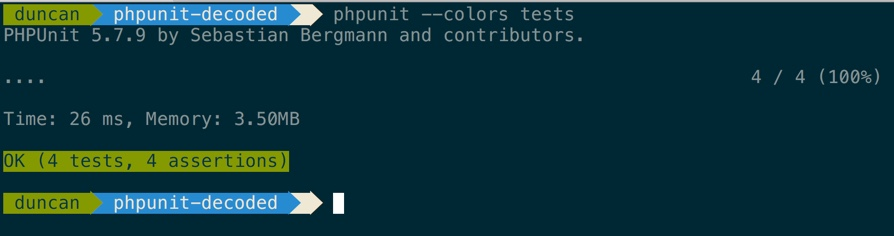

Bootstrapping(引導)
有時你需要在執行測試之前要載入某些檔案，一個完美的例子在執行任何測試之前確保載入 Composer 的 autoload 腳本，雖然可以在每個 Test Class 開頭手動載入，但最好還是利過 PHPUnit 的 bootstrap 設定，如下：
|
|
輸出格式
除了預設的測試報告，PHPUnit 還提供兩個選項 –tap 以及 –testdox 。
TAP 是 Test Anything Protocol 的縮寫
|
|
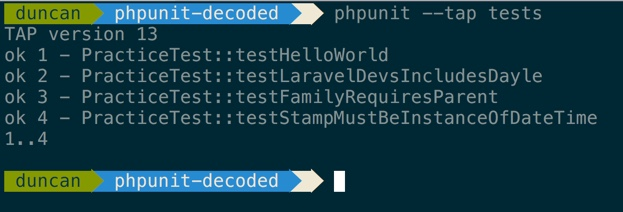
TestDox 格式以稍微不同的方式，它會讀取測試 Methods 名稱，並將依照 camelCase 名稱轉換為可讀的句子，例如 testRedirectsToHomePageOnSave 會轉換為 Redirects To Home Page On Save 。
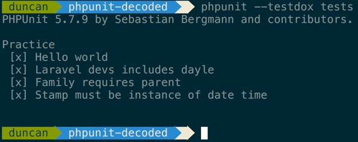
這有助於了解哪些測試成功的俯視圖以及提供文件，這是寫測試的一個優點：免費文件。
XML 配置檔
如果你以為每次使用 PHPUnit 都要輸入這麼多選項，那麼你錯了，並不需要這樣：
|
|
相反的，利用 PHPUnit 讀取配置檔的功能，讓我們回顧一下最簡單的例子，在專案的根目錄中，建立一個 phpunit.xml 的檔案並輸入：
|
|
使用這句，就可以不需要在執行測試時使用 –colors 這個 tag ，讓我們更加利用這個配置檔，使用一些其它的 option
|
|
前兩個屬性已經是你所熟悉的，其餘看個人的選擇，我傾向將所有錯誤、通知、警告轉換為異常，此外，如果一個測試失敗，那麼我想取消剩餘的測試，有些人可能不喜歡，但如果你只關心修復第一個錯誤，那也不需要執行之後數以百計的測試。
依據目前的情況，我們仍然要手動指定路徑，這樣不太好，設置自定義目錄，使用一個
|
|
當你只想測試你所有測試套件裡的某個子集，這種方式可以大大增加靈活度，增加一個專門用於整合測試的測試套件
|
|
當你只想執行 “Integration” 這個測試套件時
|
|
在本書太多數章節，我們只使用一個主測試套件，但在實務上，一定要有系統的建立測試，你不會希望在存檔進行單元測試時執行了驗收測試。
如果你想執行上面所列出來的所有測試，你只需要執行 phpunit 即可。
持續測試
每次儲存檔案時自動執行測試是一個好的方式，像 Sublime Text 這樣的輕量級編輯器不提供這種功能，但可以安裝一些工具來完成這件事
本書作者介紹是安裝 Ruby 的套件來達到儲檔自動執行測試，但我覺得過程有點麻煩，所以這邊介紹一下 PhpStorm 的 File Watchers 來達到自動執行測試
安裝 PHPUnit Notifier
要自動執行測試之前，先安裝個測試通知套件，方便在自動執行測試後，可以直接通知測試結果
這邊使用 PHPUnit Notifier 這個套件
|
|
安裝完之後，在 phpunit.xml 裡加上監聽
|
|
之後只要再這個專案底下執行測試就會跳出測試結果通知
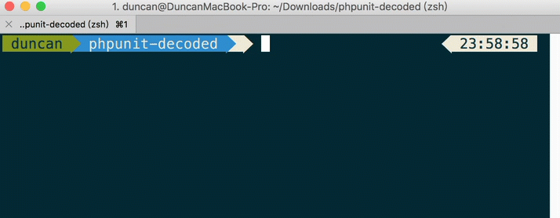
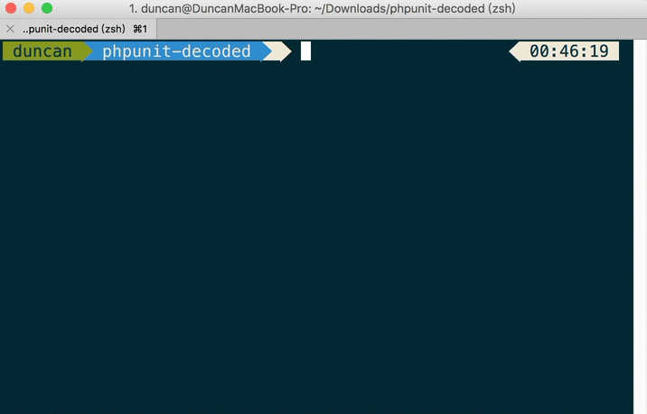
PhpStorm File Watchers
已經安裝完通知套件後，再來設定 PhpStorm File Watchers 來達到存檔自動執行測試
開啟 Preferences → Tools → File Watchers
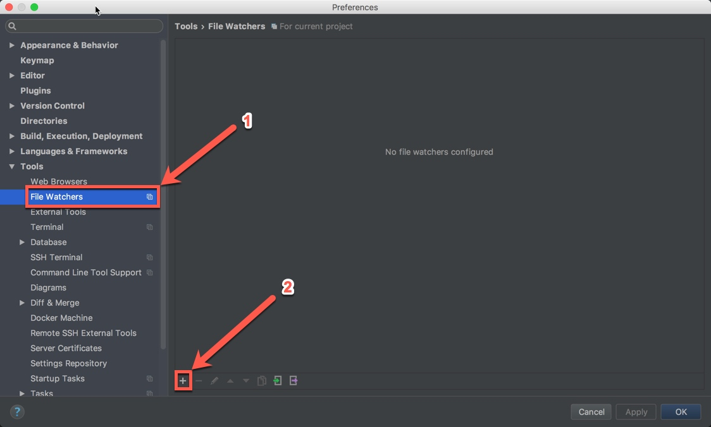
Choose Template
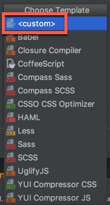
New Watcher
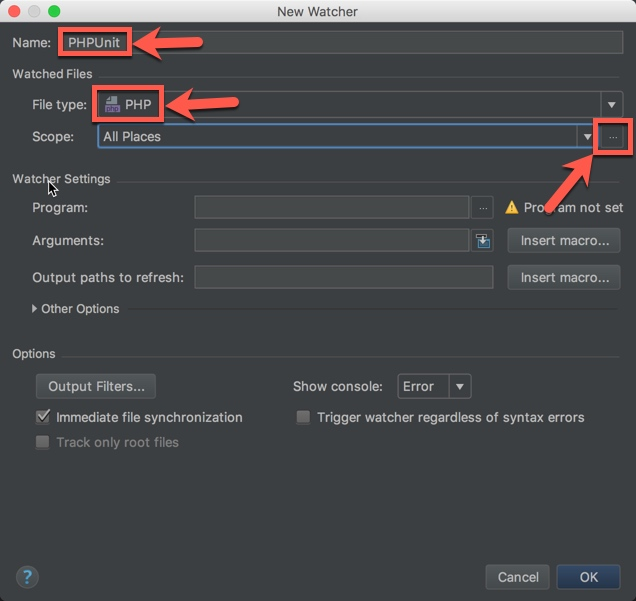
Name：自訂名稱
File type：選擇 PHP
Scope：選擇監聽範圍
Scopes
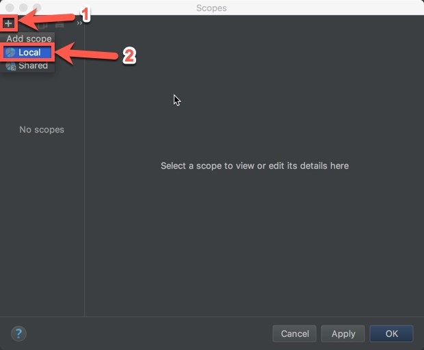
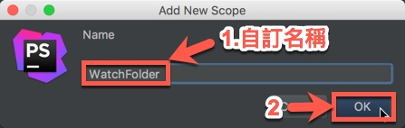
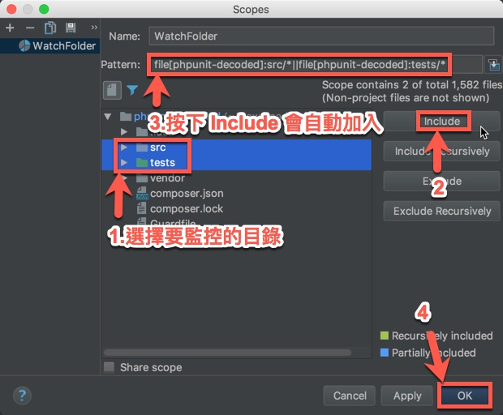
選擇工作目錄
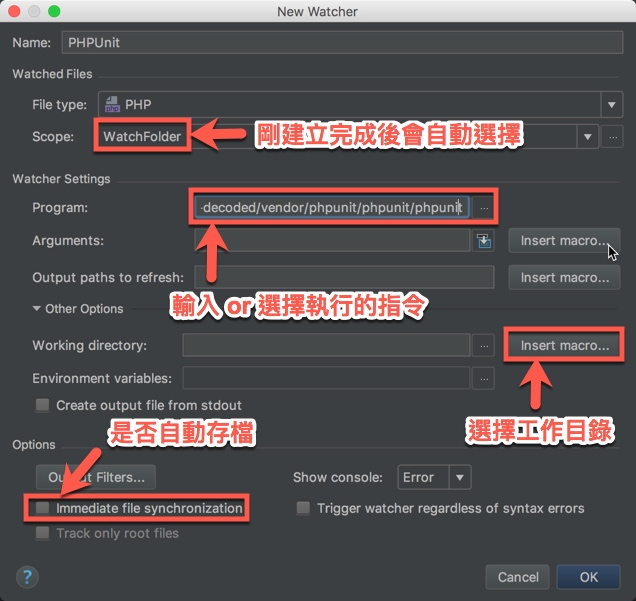
Program：這邊使用 vendor 底下的 phpunit
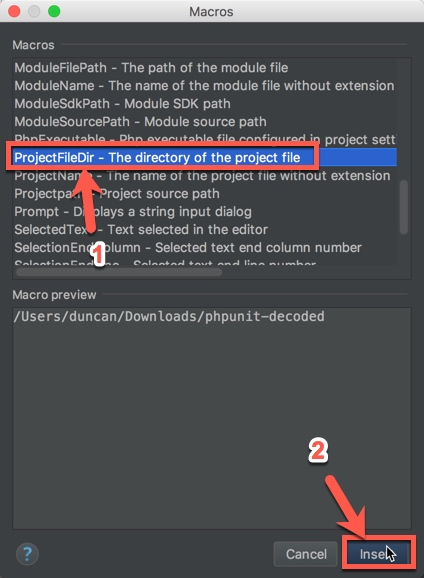
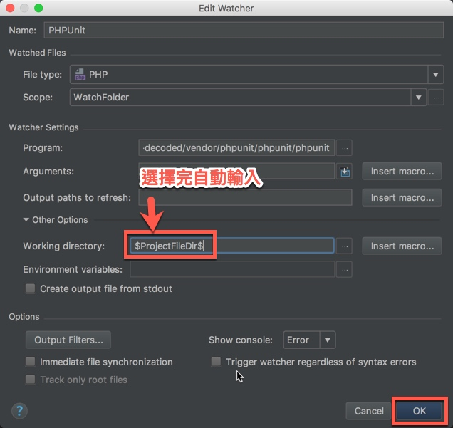
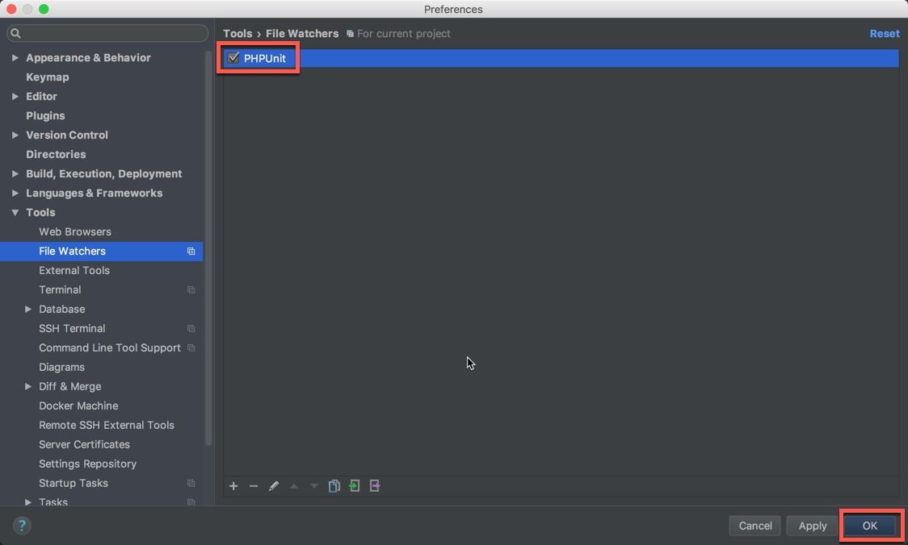
以上設定完畢之後，PhpStorm 就會依據剛設定的目錄來監聽檔案存檔後是否有異動，有異動則會自動執行剛所設定的 phpunit
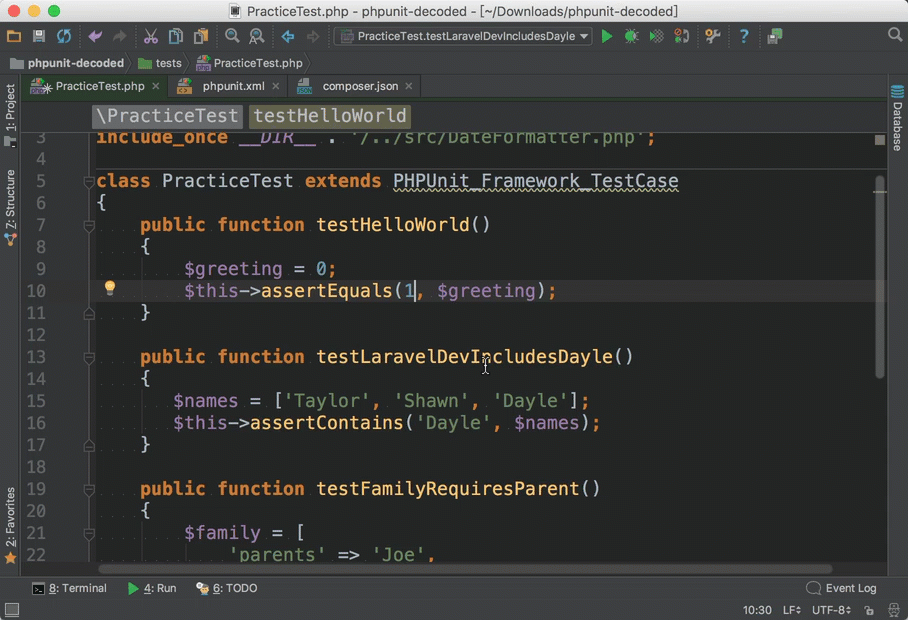

總結
在本章中，介紹了配置 PHPUnit 的基礎知識，理解這些不同的選擇是必要的，也不要忘記 Laravel 提供了自己的